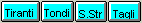
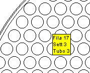
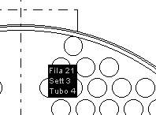
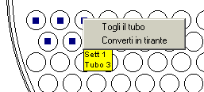

I pulsanti di comando

I menu nascosti
Quando si sorvola con il mouse l'area grafica della finestra principale compaiono dei riquadri informativi gialli come quello qui riprodotto.

Tali riquadri, oltre che in corrispondenza di ogni foro della piastra, compaiono anche vicino ad elementi singolari della tracciatura, quali l'OTL e il diametro interno del mantello.
Inoltre, se il mouse si sofferma su una posizione del reticolo dalla quale è stato eliminato un tubo, il riquadro informativo si presenta con lo sfondo nero, come nel seguente esempio.

Si osservi anche che quando un riquadro giallo relativo ad un foro della piastra è presente, la barra di stato riporta le coordinate del centro del foro.
Quando un riquadro giallo è presente e si preme il pulsante destro del mouse appare un menu nascosto:

In esso sono disponibili alcune azioni sensibili al contesto.
E' anche possibile effettuare una selezione multipla. Se si clicca con il pulsante sinistro su di un foro appare un segnalino blu nel suo centro. Continuando a cliccare mantenendo premuto il tasto Ctrl si selezionano altri fori, ai quali si può collettivamente applicare l'azione del menu nascosto.
